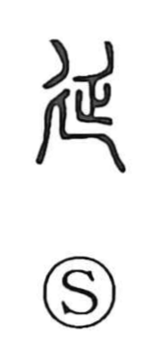

延

Uncategorized
Kun: nobiru, noberu, nobasu | On: en
to extend ・ to prolong ・ to postpone
Explanation
延 is a compound of the long, trailing path sign 廴 and a figure later written as 正, which in early forms depicts a corpse with limbs drawn in. Together they evoke the 延道 or 羨道—the gently sloping, elongated passage leading down to the burial chamber of ancient royal tombs, cut deep underground. From this image of a way that stretches toward the chamber, the character came to mean to extend, to prolong, and by extension to postpone.